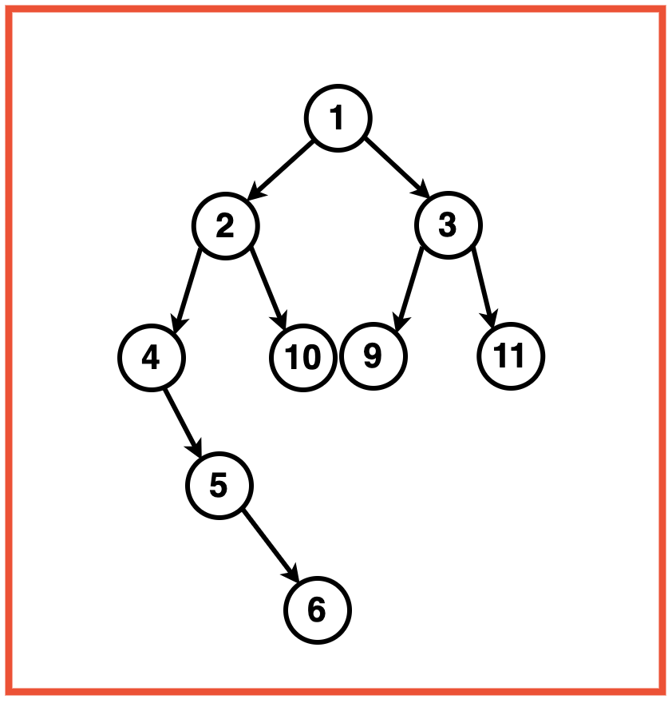
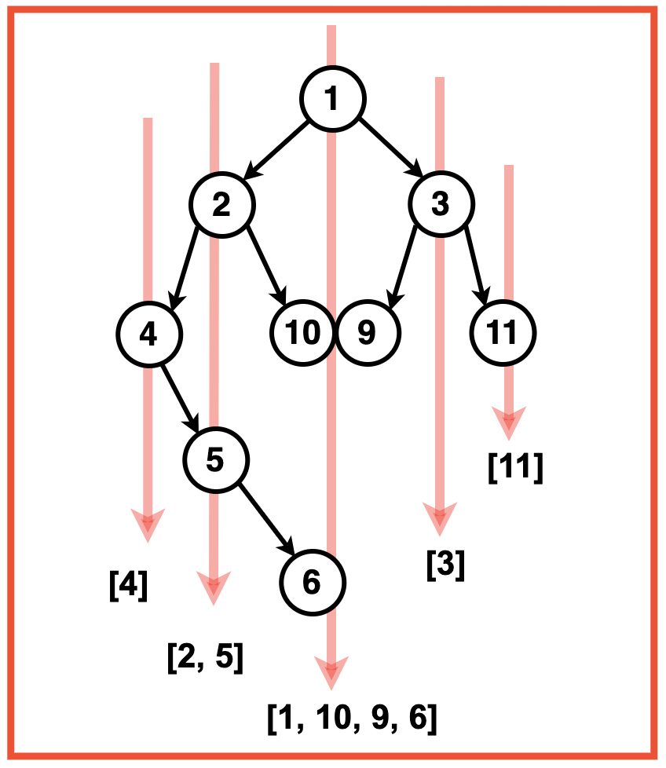
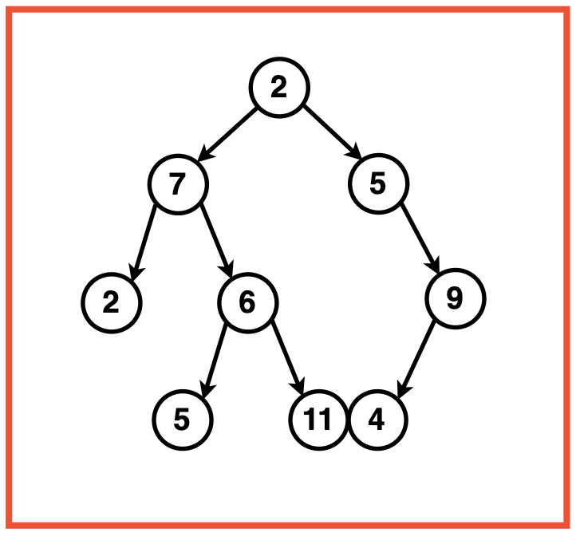
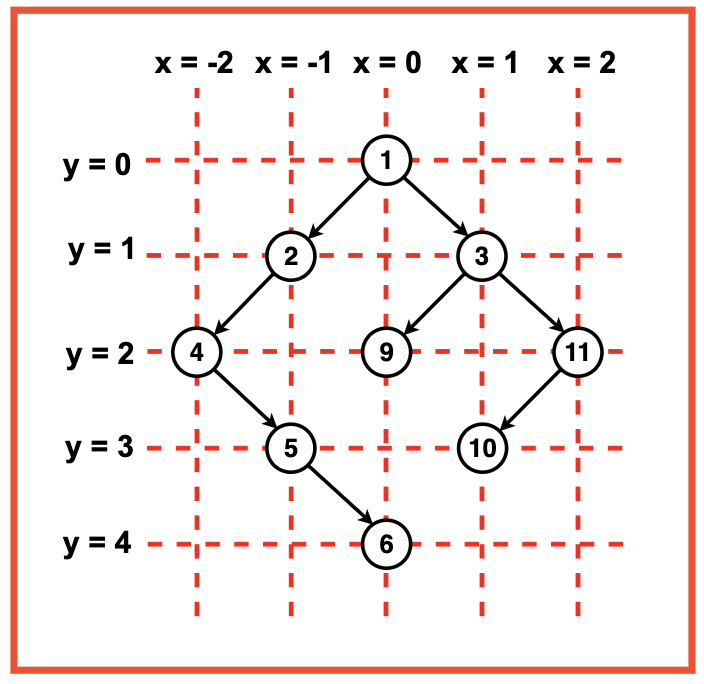
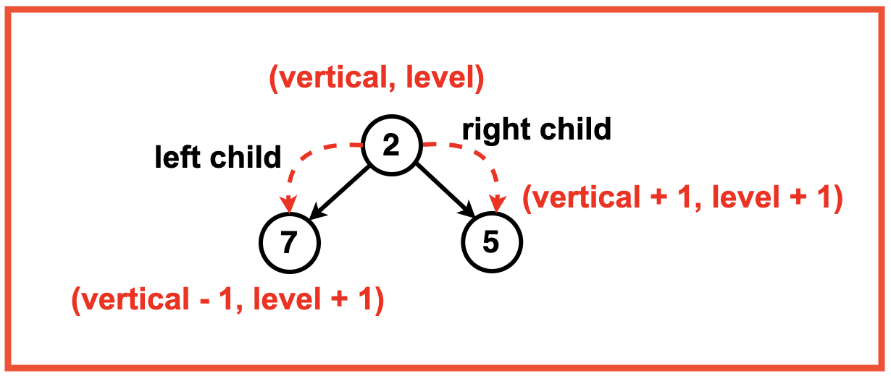
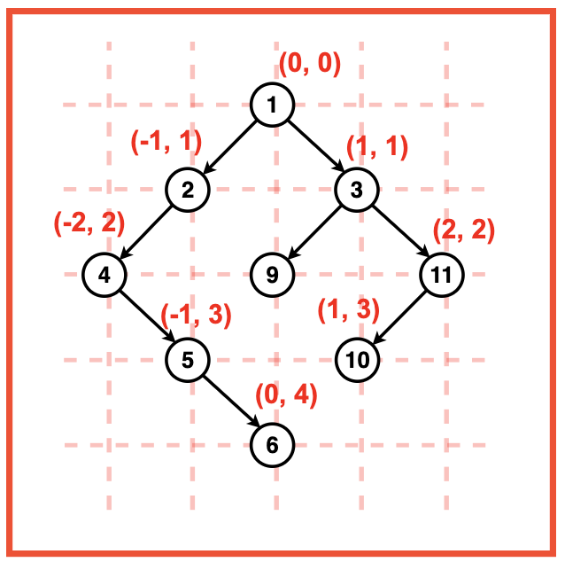
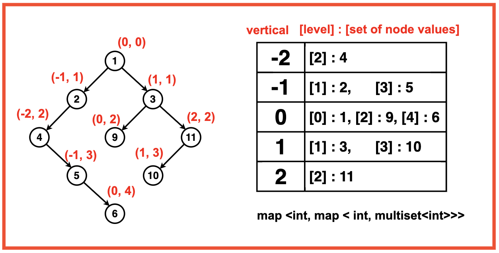
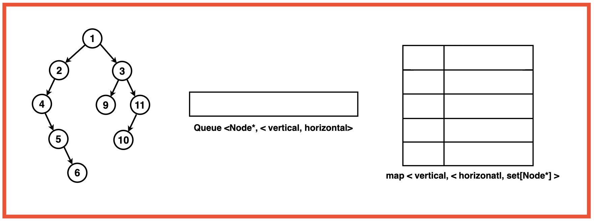
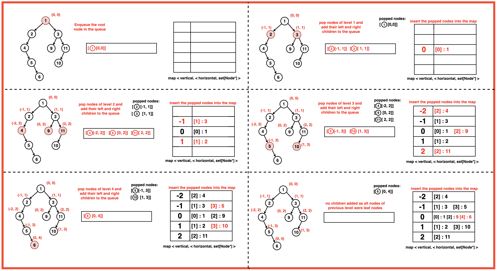

Problem Statement: Given a Binary Tree, return the Vertical Order Traversal of it starting from the Leftmost level to the Rightmost level. If there are multiple nodes passing through a vertical line, then they should be printed as they appear in level order traversal of the tree.
Examples
Example 1:Input:Binary Tree: 1 2 3 4 10 9 11 -1 5 -1 -1 -1 -1 -1 -1 -1 6
Output: Vertical Order Traversal: [[4],[2, 5], [1, 10, 9, 6],[3],[11]]Explanation: Vertical Levels from left to right:
Level -2: [4]
Level -1: [2]
Level 0: [1, 10, 9, 6] (Overlapping nodes are added in their level order sequence)
Level 1: [3]
Level 2: [11]
Example 2:Input:Binary Tree: 2 7 5 2 6 -1 9 -1 -1 5 11 4 -1
Output : [[2],[7, 5],[2, 6], [5, 11, 4],[9]]Explanation: Vertical Levels from left to right:
Level -2: [2]
Level -1: [7, 5]
Level 0: [2, 6]
Level 1: [5, 11, 4] (Overlapping nodes are added in their level order sequence)
Disclaimer: Don’t jump directly to the solution, try it out
yourself first.
Optimal Approach
Algorithm / Intuition
We can assign a vertical and level to every node. This will help us in categorising nodes based on their position in the binary tree.
Vertical Coordinates (x): The vertical coordinate, denoted as 'x', represents the vertical column in the tree. It essentially signifies the horizontal position of a node in relation to its parent. Nodes with the same 'x' value are aligned vertically, forming a column.
Level Coordinates (y): The level coordinate, denoted as 'y', represents the depth or level of a node in the tree. It signifies the vertical position of a node within the hierarchy of levels. As we traverse down the tree, the 'y' value increases, indicating a deeper level.

We create a map that serves as our organisational structure. The map is based on the vertical and level information of each node. The vertical information, represented by 'x', signifies the vertical column, while the level information, denoted as 'y', acts as the key within the nested map. This nested map utilises a multiset to ensure that node values are stored in a unique and sorted order.
With our map structure in place, we initiate a level order BFS traversal using a queue. Each element in the queue is a pair containing the current node and its corresponding vertical and level coordinates. Starting with the root node, we enqueue it with initial vertical and level values (0, 0). During traversal, for each dequeued node, we update the map by inserting the node value at its corresponding coordinates and enqueue its left and right children with adjusted vertical and level information.
When traversing to the left child, the vertical value decreases by 1 and the level increases by 1, while traversal to the right child leads to an increase in both vertical and level by 1.

After completing the BFS traversal, we prepare the final result vector. We iterate through the map, creating a column vector for each vertical column. This involves gathering node values from the multiset and inserting them into the column vector. These column vectors are then added to the final result vector, resulting in a 2D representation of the vertical order traversal of the binary tree.

Algorithm:
Step 1: Create an empty map to store the nodes based on their vertical and horizontal levels.The key of the map ‘x’ represents the vertical column, and the nested map uses ‘y’ as the key for the level. Initialise a ‘multiset’ to store node values at a specific vertical and level to ensure unique and sorted order of nodes.

Step 2: Initialise a queue for level order BFS traversal. Each element in the queue should be a pair containing the current node and its vertical and level order information as x and coordinates. Enqueue the root node into the queue with its initial vertical and level order values as (0, 0)

Step 3: While the queue is not empty, pop the front node of the queue:
Get this nodes vertical ie. ‘x’ and level order ‘y’ information.
Insert this node into the map at its corresponding coordinate.
Push the left and right child of the node with their updated horizontal distance and level order.

For the left child, decrement the vertical value ‘x’ by 1 to indicate a move towards the left. Increment the level value ‘y’ by 1 to indicate a move down to the next level.
For the right child, increment the vertical value ‘x’ by 1 to indicate a move towards the right.
Increment the level value ‘y’ by 1 to indicate a move down to the next level.
Enqueue both the left and right children along with their updated vertical and level information into the queue.
Step 4: After the BFS traversal using the queue is complete, initialise a final result 2D vector ‘ans’.
Iterate through the map, creating a column vector for each vertical column. Gather the node values from the multiset and insert them into the column vector.
Add these column vectors to the final result vector ‘ans’.
Step 5: Return the 2D vector `ans` representing the vertical order traversal of the binary tree.
Code
#include <iostream>
#include <vector>
#include <set>
#include <queue>
#include <map>
using namespace std;
// Node structure for the binary tree
struct Node {
int data;
Node* left;
Node* right;
// Constructor to initialize
// the node with a value
Node(int val) : data(val), left(nullptr), right(nullptr) {}
};
class Solution {
public:
// Function to perform vertical order traversal
// and return a 2D vector of node values
vector<vector<int>> findVertical(Node* root){
// Map to store nodes based on
// vertical and level information
map<int, map<int, multiset<int>>> nodes;
// Queue for BFS traversal, each
// element is a pair containing node
// and its vertical and level information
queue<pair<Node*, pair<int, int>>> todo;
// Push the root node with initial vertical
// and level values (0, 0)
todo.push({root, {0, 0}});
// BFS traversal
while(!todo.empty()){
// Retrieve the node and its vertical
// and level information from
// the front of the queue
auto p = todo.front();
todo.pop();
Node* temp = p.first;
// Extract the vertical and level information
// x -> vertical
int x = p.second.first;
// y -> level
int y = p.second.second;
// Insert the node value into the
// corresponding vertical and level
// in the map
nodes[x][y].insert(temp->data);
// Process left child
if(temp->left){
todo.push({
temp->left,
{
// Move left in
// terms of vertical
x-1,
// Move down in
// terms of level
y+1
}
});
}
// Process right child
if(temp->right){
todo.push({
temp->right,
{
// Move right in
// terms of vertical
x+1,
// Move down in
// terms of level
y+1
}
});
}
}
// Prepare the final result vector
// by combining values from the map
vector<vector<int>> ans;
for(auto p: nodes){
vector<int> col;
for(auto q: p.second){
// Insert node values
// into the column vector
col.insert(col.end(), q.second.begin(), q.second.end());
}
// Add the column vector
// to the final result
ans.push_back(col);
}
return ans;
}
};
// Helper function to
// print the result
void printResult(const vector<vector<int>>& result) {
for(auto level: result){
for(auto node: level){
cout << node << " ";
}
cout << endl;
}
cout << endl;
}
int main() {
// Creating a sample binary tree
Node* root = new Node(1);
root->left = new Node(2);
root->left->left = new Node(4);
root->left->right = new Node(10);
root->left->left->right = new Node(5);
root->left->left->right->right = new Node(6);
root->right = new Node(3);
root->right->right = new Node(10);
root->right->left = new Node(9);
Solution solution;
// Get the Vertical traversal
vector<vector<int>> verticalTraversal =
solution.findVertical(root);
// Print the result
cout << "Vertical Traversal: ";
printResult(verticalTraversal);
return 0;
}
import java.util.*;
// Node class for the binary tree
class Node {
int data;
Node left;
Node right;
// Constructor to initialize
// the node with a value
public Node(int val) {
data = val;
left = null;
right = null;
}
}
public class Solution {
// Function to perform vertical order traversal
// and return a 2D ArrayList of node values
public List<List<Integer>> findVertical(Node root) {
// Map to store nodes based on
// vertical and level information
Map<Integer, Map<Integer, TreeSet<Integer>>> nodes = new TreeMap<>();
// Queue for BFS traversal, each
// element is a pair containing node
// and its vertical and level information
Queue<Pair<Node, Pair<Integer, Integer>>> todo = new LinkedList<>();
// Push the root node with initial vertical
// and level values (0, 0)
todo.add(new Pair<>(root, new Pair<>(0, 0)));
// BFS traversal
while (!todo.isEmpty()) {
// Retrieve the node and its vertical
// and level information from
// the front of the queue
Pair<Node, Pair<Integer, Integer>> p = todo.poll();
Node temp = p.getKey();
// Extract the vertical and level information
// x -> vertical
int x = p.getValue().getKey();
// y -> level
int y = p.getValue().getValue();
// Insert the node value into the
// corresponding vertical and level
// in the map
nodes.computeIfAbsent(x, k -> new TreeMap<>())
.computeIfAbsent(y, k -> new TreeSet<>())
.add(temp.data);
// Process left child
if (temp.left != null) {
todo.add(new Pair<>(temp.left, new Pair<>(x - 1, y + 1)));
}
// Process right child
if (temp.right != null) {
todo.add(new Pair<>(temp.right, new Pair<>(x + 1, y + 1)));
}
}
// Prepare the final result list
// by combining values from the map
List<List<Integer>> ans = new ArrayList<>();
for (Map.Entry<Integer, Map<Integer, TreeSet<Integer>>> entry : nodes.entrySet()) {
List<Integer> col = new ArrayList<>();
for (TreeSet<Integer> set : entry.getValue().values()) {
// Insert node values
// into the column list
col.addAll(set);
}
// Add the column list
// to the final result
ans.add(col);
}
return ans;
}
// Helper function to
// print the result
private static void printResult(List<List<Integer>> result) {
for (List<Integer> level : result) {
for (int node : level) {
System.out.print(node + " ");
}
System.out.println();
}
System.out.println();
}
public static void main(String[] args) {
// Creating a sample binary tree
Node root = new Node(1);
root.left = new Node(2);
root.left.left = new Node(4);
root.left.right = new Node(10);
root.left.left.right = new Node(5);
root.left.left.right.right = new Node(6);
root.right = new Node(3);
root.right.right = new Node(10);
root.right.left = new Node(9);
Solution solution = new Solution();
// Get the Vertical traversal
List<List<Integer>> verticalTraversal = solution.findVertical(root);
// Print the result
System.out.print("Vertical Traversal: ");
printResult(verticalTraversal);
}
}
from collections import deque, defaultdict
# Node structure for the binary tree
class Node:
def __init__(self, val):
self.data = val
self.left = None
self.right = None
class Solution:
# Function to perform vertical order traversal
# and return a 2D list of node values
def findVertical(self, root):
# Map to store nodes based on
# vertical and level information
nodes = defaultdict(lambda: defaultdict(lambda: set()))
# Queue for BFS traversal, each
# element is a pair containing node
# and its vertical and level information
todo = deque([(root, (0, 0))])
# BFS traversal
while todo:
# Retrieve the node and its vertical
# and level information from
# the front of the queue
temp, (x, y) = todo.popleft()
# Insert the node value into the
# corresponding vertical and level
# in the map
nodes[x][y].add(temp.data)
# Process left child
if temp.left:
todo.append((temp.left, (x - 1, y + 1)))
# Process right child
if temp.right:
todo.append((temp.right, (x + 1, y + 1)))
# Prepare the final result list
# by combining values from the map
ans = []
for x, y_vals in nodes.items():
col = []
for y, values in y_vals.items():
# Insert node values
# into the column list
col.extend(sorted(values))
# Add the column list
# to the final result
ans.append(col)
return ans
# Helper function to
# print the result
def printResult(result):
for level in result:
for node in level:
print(node, end=" ")
print()
print()
if __name__ == "__main__":
# Creating a sample binary tree
root = Node(1)
root.left = Node(2)
root.left.left = Node(4)
root.left.right = Node(10)
root.left.left.right = Node(5)
root.left.left.right.right = Node(6)
root.right = Node(3)
root.right.right = Node(10)
root.right.left = Node(9)
solution = Solution()
# Get the Vertical traversal
verticalTraversal = solution.findVertical(root)
# Print the result
print("Vertical Traversal: ")
printResult(verticalTraversal)
// Node structure for the binary tree
class Node {
constructor(val) {
this.data = val;
this.left = null;
this.right = null;
}
}
class Solution {
// Function to perform vertical order traversal
// and return a 2D array of node values
findVertical(root) {
// Map to store nodes based on
// vertical and level information
const nodes = new Map();
// Queue for BFS traversal, each
// element is an array containing node
// and its vertical and level information
const todo = [];
// Push the root node with initial vertical
// and level values (0, 0)
todo.push([root, [0, 0]]);
// BFS traversal
while (todo.length > 0) {
// Retrieve the node and its vertical
// and level information from
// the front of the queue
const [temp, [x, y]] = todo.shift();
// Insert the node value into the
// corresponding vertical and level
// in the map
if (!nodes.has(x)) {
nodes.set(x, new Map());
}
if (!nodes.get(x).has(y)) {
nodes.get(x).set(y, new Set());
}
nodes.get(x).get(y).add(temp.data);
// Process left child
if (temp.left) {
todo.push([
temp.left,
[
// Move left in
// terms of vertical
x - 1,
// Move down in
// terms of level
y + 1
]
]);
}
// Process right child
if (temp.right) {
todo.push([
temp.right,
[
// Move right in
// terms of vertical
x + 1,
// Move down in
// terms of level
y + 1
]
]);
}
}
// Prepare the final result array
// by combining values from the map
const ans = [];
for (const [key, value] of nodes) {
const col = [];
for (const [subKey, subValue] of value) {
// Insert node values
// into the column array
col.push(...subValue);
}
// Add the column array
// to the final result
ans.push(col);
}
return ans;
}
}
// Helper function to
// print the result
function printResult(result) {
for (const level of result) {
console.log(level.join(" "));
}
console.log("");
}
// Creating a sample binary tree
const root = new Node(1);
root.left = new Node(2);
root.left.left = new Node(4);
root.left.right = new Node(10);
root.left.left.right = new Node(5);
root.left.left.right.right = new Node(6);
root.right = new Node(3);
root.right.right = new Node(10);
root.right.left = new Node(9);
const solution = new Solution();
// Get the Vertical traversal
const verticalTraversal = solution.findVertical(root);
// Print the result
console.log("Vertical Traversal: ");
printResult(verticalTraversal);
Output
Vertical Traversal:
4
2 5
1 9 10 6
3
10
Complexity Analysis
Time Complexity: O(N * log2N * log2N * log2N) where N represents the number of nodes in the Binary Tree.
Postorder Traversal performed using BFS as a time complexity of O(N) as we are visiting each and every node once.
Multiset Operations to insert overlapping nodes at a specific vertical and horizontal level also takes O(log2N) complexity.
Map operations involve insertion and retrieval of nodes with their vertical and level as their keys. Since there are two nested maps, the total time complexity becomes O(log2N)*O(log2N).
Space Complexity: O(N + N/2) where N represents the number of nodes in the Binary Tree.
The map for storing nodes based on their vertical and level information occupies an additional space complexity of O(N) as it stores all N nodes of the Binary Tree.
The queue for breadth first traversal occupies a space proportional to the maximum level of the tree which can be O(N/2) in the worst case of a balanced tree.
Video Explanation
Special thanks to Gauri Tomar for contributing to this article on takeUforward. If you also wish to share your knowledge with the takeUforward fam, please check out this article